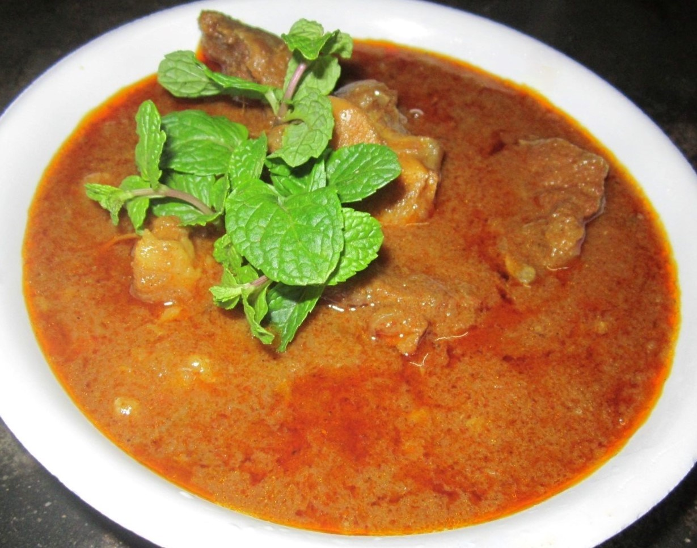

LTU Cookbook

A web based cookbook for LTU students
by random guy

Ingriedients
- bunch of corriander
- 1 red chilli
- 2 tsp of corriander seeds
- 2 tsp of cumin seeds
- 1 tsp of black peppercorns
- 2 tsp of paprika
- 1 tsp of turmeric
- 2 tsp of garam masala
- salt
- 2 tbsp of tomatoe puree
Method
- To make the paste, in a mixer, blend together the coriander stalks, red chilli,
ground spices and salt. Mix in the tomato purée.
- To cook the lamb, heat the oil in a large heavy-based casserole. Fry the cinnamon stick, cardamom pods,
bay leaves and cloves for 2 minutes. Add the onion and lamb and fry for 4-5 minutes, stirring.
Add the garlic and ginger and fry for 2 minutes.
- Add the spice paste and fry for another 2 minutes, stirring
- Add 400ml/14fl oz water, then cover with a lid and simmer for 40-50 minutes,
until cooked. Stir in the yoghurt and cook for 10 minutes.
Serve garnished with the fresh coriander leaves